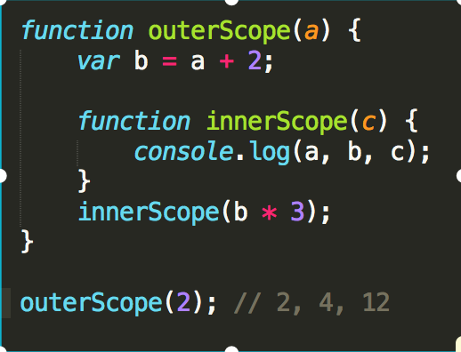
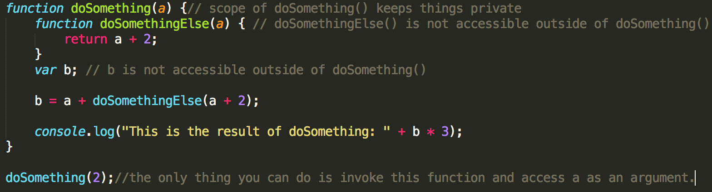
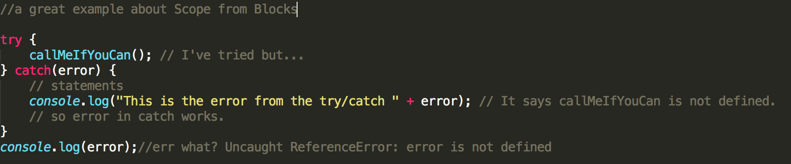

The first time I've heard about Scope I couldn't help to make an association to the way we use it in a non-coding realm. In this context Scope refers mostly to the extent or range of something. Understanding Scope in JavasScript, requires getting to know a few related and highly theoretical concepts. We need to take a look to Compiler Theory (Engine, Compiler and Scope). Let' start by defining what Scope is.
In his book about Scope and Closures, Kyle Simpson defines Scope as a set of rules that govern how the Engine can Look Up a variable by its identifier name and find it, either in the current scope or in any of the nested scopes it's contained within.
Definitely an eye opener. Scope is a set of rules. The definition also talks about the Engine and about Look Up. So we need to explore what this Engine is all about and what Look Up really means. Let's do this.
The JavaScript Engine is a program which executes JavaScript code. Let's also mention that there are many different engines and each one is designed to work with a different web browser, headless browser, or runtime. A good example is PhantomJS. where Node.js is an asynchronous, event-driven framework that allows you to use JavaScript on the server-side. Since they are JavaScript-driven tools, they are powered by JavaScript engines.
In the Scope definition we mentioned how the Engine can Look Up a variable. This Look Up is for one of two purposes.
For JavaScript the compilation occurs in microseconds, right before the code is executed. We have just introduced yet a new friend of Engine, the Compiler. Be patient we will start wrapping things up in a bit!
The Compiler handles the work of Tokenizing/Lexing, Parsing and Code-Generation.
Now. JavaScript utilizes Lexical Scope as a model, that is we set the scope rules at the time and where variables and blocks of scope are authored, and thus is set in stone by the time the lexer processes the code.
Finally we arrived at our main subject. Based on what we just learned, the next question we must answer is this. Since "we set the scope rules at the time and where variables and blocks of scope are authored" What exactly makes a scope? The answer: Functions. Functions are the most common unit of scope in JavaScript. This is a short answer and as you might expect futher development around Scope from Functions is required. We will come back to this later. Let's also say that functions are not the only way to create scope. Blocks can do this as well. Now that we have a better understanding let's recap. Let see an example about all of this. Look at the code below.
The following excerpt from JDKJS is priceless; if you understand it you'll be ahead of most JavaScript developers.
We know that JavaScript has function-based scope. Cool. At this point I'd like to introduce a technique in the design of software. The Principle of Least Privilege, also called Least Authority or Least Exposure. This principle states that you should expose only what is minimally necessary and "hide" everything else.
A proper design would hide private details making them not accessible to any outside influence and only controlled by the function. Look at the example below and notice how the design of doSomething() keeps private details private.
Up until now you've been using function declarations. This functions are always invoked by calling the name of the function like : doSomething(2); This technique works, however in doing so the identifier name foo "pollutes" the enclosing scope (in this case the global scope).
A Function Expression is the JavaScript's solution where the function is wrapped in parethesis, in other words, (function foo(){..}) means the identifier foo is found only in the scope where the .. indicates, not in the outer scope.
We can execute the Function Expression like (function foo(){..})(); The second () executes the function. The term for this pattwer is IIFE. Look at a super simple example below and in the console
Block scoping consist in declaring variables as close as possible to where they will be used. In reality you can consider it an extension of the Principle of Least Privilege. A great example of this can be found in try/catch The variable declaration in the catch clause is block-scoped. Look at the example below
Other examples of block-scoping are with, let and const